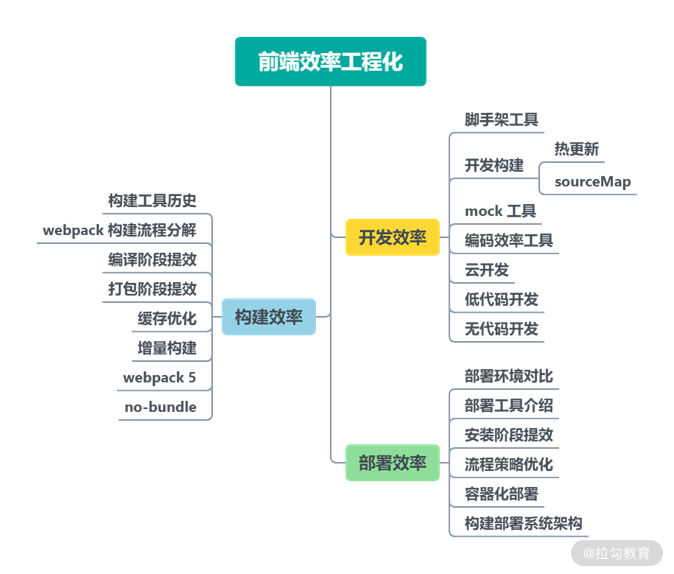

- 00 开篇词 建立上帝视角，全面系统掌握前端效率工程化.md.html
- 01 项目基石：前端脚手架工具探秘.md.html
- 02 界面调试：热更新技术如何开着飞机修引擎？.md.html
- 03 构建提速：如何正确使用 SourceMap？.md.html
- 04 接口调试：Mock 工具如何快速进行接口调试？.md.html
- 05 编码效率：如何提高编写代码的效率？.md.html
- 06 团队工具：如何利用云开发提升团队开发效率？.md.html
- 07 低代码工具：如何用更少的代码实现更灵活的需求.md.html
- 08 无代码工具：如何做到不写代码就能高效交付？.md.html
- 09 构建总览：前端构建工具的演进.md.html
- 10 流程分解：Webpack 的完整构建流程.md.html
- 11 编译提效：如何为 Webpack 编译阶段提速？.md.html
- 12 打包提效：如何为 Webpack 打包阶段提速？.md.html
- 13 缓存优化：那些基于缓存的优化方案.md.html
- 14 增量构建：Webpack 中的增量构建.md.html
- 15 版本特性：Webpack 5 中的优化细节.md.html
- 16 无包构建：盘点那些 No-bundle 的构建方案.md.html
- 17 部署初探：为什么一般不在开发环境下部署代码？.md.html
- 18 工具盘点：掌握那些流行的代码部署工具.md.html
- 19 安装提效：部署流程中的依赖安装效率优化.md.html
- 20 流程优化：部署流程中的构建流程策略优化.md.html
- 21 容器方案：从构建到部署，容器化方案的优势有哪些？.md.html
- 22 案例分析：搭建基本的前端高效部署系统.md.html
- 23 结束语 前端效率工程化的未来展望.md.html
- 捐赠
23 结束语 前端效率工程化的未来展望
你好，我是李思嘉。
本专栏的内容到这里就结束了。我们先来简单回顾一下整个课程的主要内容，如下图：

在这个专栏中，我主要介绍且梳理了前端工程化中效率提升方向的知识，内容涵盖开发效率、构建效率和部署效率三个方面。希望你通过这个系列课程的学习，能建立起前端效率工程化方面相对完整的知识体系，同时在前端开发日常流程中的效率工程类问题方面，能找到分析和解决的新方向。
当然，这些方向实际涵盖的概念与技术点非常广泛，并不容易完全掌握，除了已有的概念和技术之外，新的技术和方向也在不断涌现。下面我会对前端效率工程化相关的技术做一些展望。
云工作流
开发效率方面，由 Web IDE 发展而来的云开发工具，目前正逐渐成为几个大型厂商探索的方向之一。从开发到部署的完整云端工作流方式在未来可能成为标准。
AI 生成页面
和目前依赖设计资源与开发基建的低代码或无代码开发相比，基于 AI 的生成页面工具（例如微软的 Sketch2Code）可以进一步解放生产力。目前，无论是基于设计稿（Sketch/PSD）的精准生成方式，还是基于草图乃至描述语句的 AI 匹配生成方式，仍有各自的局限性。但是随着 AI 技术的发展，这类产品可能会替代目前前端开发过程中的一些基础重复性工作。
Go/Rust
在构建效率方面，Webpack 5 带来了更完整的缓存策略和代码优化策略，但是从底层性能上，构建工具本身的性能仍然受到 NodeJS 自身语言的限制。从 esbuild 工具的思路出发，基于 Go、Rust 等高性能语言的编译工具在未来或许能成为性能突破点之一。
No bundle & HTTP/3
构建效率另一个方向的发展来自无包构建。尽管无包构建工具在生产环境下仍然采用打包构建的方式，但随着网络技术（例如 HTTP/3）的发展，或许最终可以在生产环境下同样采用无包构建。此外，渐进式的使用方式（例如 vendor 部分打包而源码部分无包使用）也可能很快成为可实现的方向。
总结
希望我的专栏内容和对未来趋势的展望能对你有所帮助。学习时，你需要在日常工作中不断实践，结合具体的场景尝试可行的优化方案。
由于自身在团队中的职责不同，每个开发人员索要学习和侧重的点也不同：
- 如果你目前主要做的是具体项目的开发维护工作，那么分析现有项目的构建工具、构建配置就是一个很好的入手点。通过构建效率模块的相关课程，相信你可以比之前更全面地进行分析和优化。
- 如果你目前承担着多个项目的选型与架构工作，希望开发效率模块的一些视角可以为你带来思路。
- 如果你目前从事的是前端基础建设的相关工作，希望系列课程中提到的一些新的开发、构建和部署工具也能为你提供一些着手方向。
前端工程化是一个系统工程，不同的开发人员都可以在团队中找到适合的位置。通过不断地实战开发和经验积累，相信你可以逐步提升对技术的认识，增强技术实力。
如果你觉得课程不错，不要忘了推荐给身边的朋友。前路漫漫，一起加油！
© 2019 - 2023 Liangliang Lee. Powered by gin and hexo-theme-book.